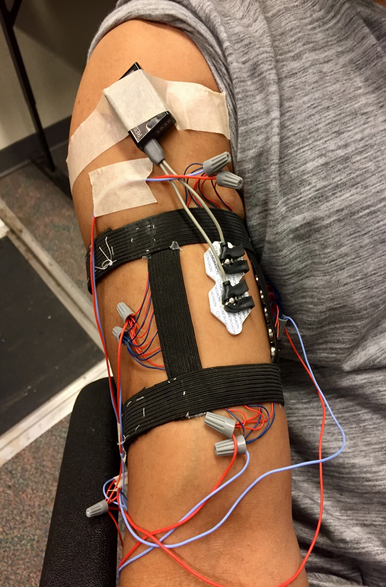
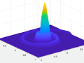
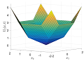
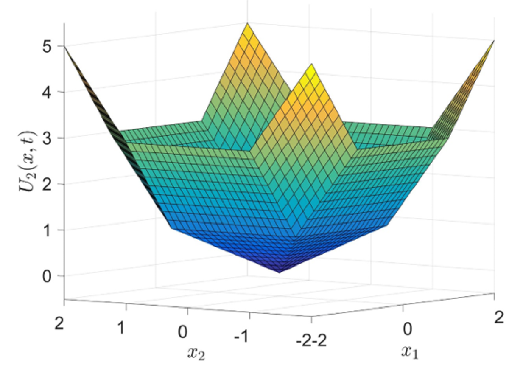
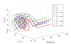
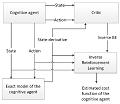
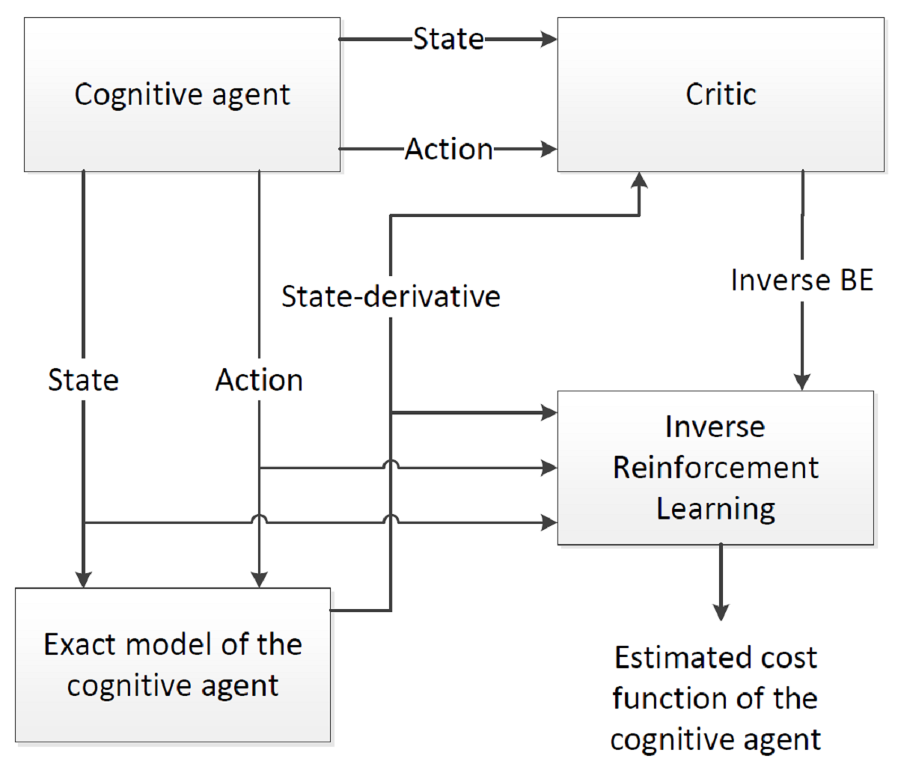
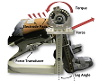
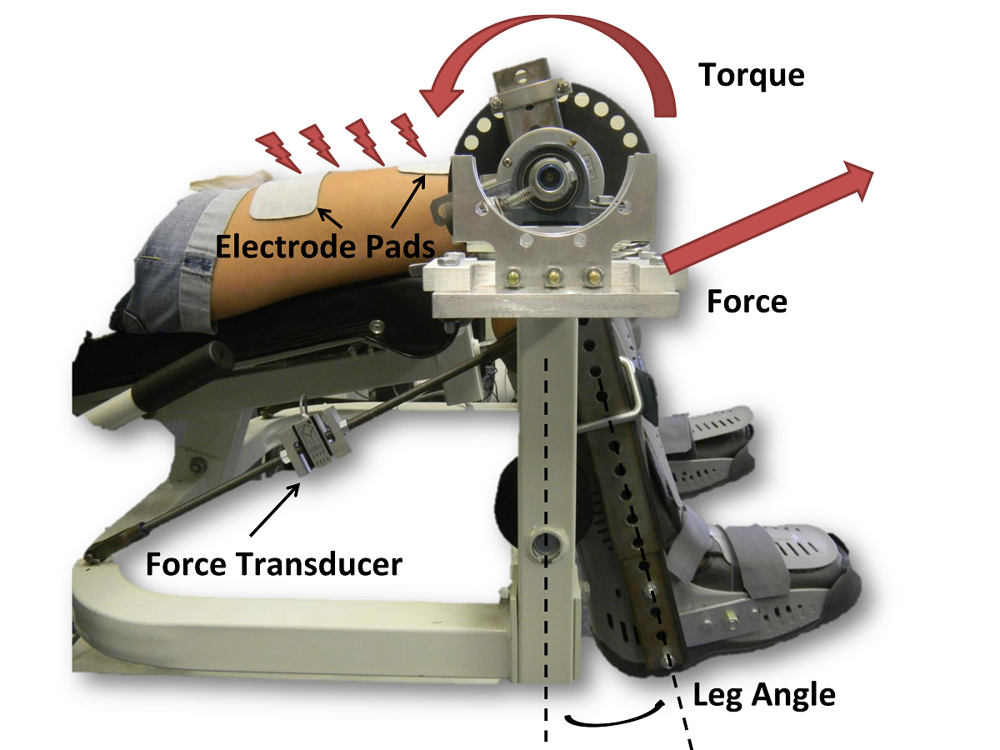

Click for publications...
Model-based reinforcement learning as a way to increase the data-efficiency of reinforcement learning had been extensively studied in the literature for systems modeled in discrete time and space. Capitalizing on recent developments in model-free reinforcement learning in systems modeled in continuous time and space, we developed novel model-based reinforcement learning methods for these systems that vastly improved their data efficiency and their usefulness for online optimal feedback control. Using local approximation methods, we further improved the computational efficiency of model-based reinforcement learning to enable real-time learning. The developed methods can achieve model-based reinforcement learning in the presence of modelling uncertainties and can guarantee stability during the learning phase as was demonstrated in our recent result titled "Online Approximate Optimal Station Keeping of a Marine Craft in the Presence of an Irrotational Current," published in IEEE Transactions on Robotics.
Click for previous page...

Functional electrical stimulation
Click for publications...
The delay-tolerant controllers we developed are applied to counter fatigue-induced actuation delays in neuromuscular electrical stimulation-based feedback control of the knee joint. A Switched systems based approach to closed-loop neuromuscular electrical stimulation-based control of the ankle joint is also explored. Recently, we have also started work on potential uses of neuromuscular electrical stimulation to decrease co-contractions in the knee joint and Osteoarthritis related pain.
Click for previous page...

Data-driven modeling
Click for publications...
Motivated by the need to adapt to changing models and reduce modelling errors in model-based control and reinforcement learning, we developed online data-driven adaptive system identification methods to identify the unknown parameters in the system model. The methods we developed can achieve parameter identification without restrictive persistence of excitation assumptions typically utilized in the online parameter identification literature and without numerical differentiation of the state that is typically required in modern data-driven parameter identification techniques. We were also able to generalize this technique to achieve simultaneous online state and parameter estimation using input-output measurements.
Click for previous page...


Stability of nonsmooth systems
Click for publications...
Various Lyapunov-based analysis methods were available for differential inclusions in literature for both autonomous and nonautonomous systems. Several of these stability theorems applied to nonsmooth systems for which strict Lyapunov functions could be found. However, for certain classes of controllers (e.g., adaptive controllers, output feedback controllers, etc.), a strict Lyapunov function may be difficult (or impossible) to find, which restricted the use of such existing methods. We contributed to the extension of the LaSalle-Yoshizawa Theorem to nonsmooth nonautonomous systems utilizing Filippov solutions of nonsmooth differential equations and nonstrict Lyapunov functions. Recently, in a paper titled “Invariance-like results for switched nonautonomous nonsmooth systems,” published in IEEE transactions on Automatic Control, we were able to extend the above results to systems described by switched differential inclusions. While conducting this work, I also discovered a fundamental fact about stability of differential inclusions that allows us to analyze these systems using Lyapunov methods with reduced conservativeness.
Click for previous page...

Online solutions of differential games
Click for publications...
Existing methods to solve N-player nonzero-sum differential games online using a parametric function approximator such as a neural network to approximate the value functions utilized a set of residual errors (the so-called Bellman errors) to update the estimates of the unknown parameters in the function approximator using least-squares or gradient-based techniques. A restrictive persistence of excitation condition was required to ensure boundedness and convergence of the value function weights. An ad-hoc exploration signal is added to the control signal during the learning phase to satisfy the excitation condition along the system trajectories. I developed a data-driven model-based architecture to solve these differential games with relaxed excitation conditions. A similar approach was also generalized to the much harder problem of differential graphical games. We also utilized a Hamilton-Jacobi approach inspired by the work in to develop intrusion monitoring methods for a network of agents.
Click for previous page...


Online inverse reinforcement learning
Click for publications...
Seamless cooperation between humans and autonomous agents is a vital yet challenging aspect of modern robotic systems. Effective cooperation between humans and autonomous systems can be achieved if the autonomous systems are capable of learning to act by observing other cognitive entities. Based on the premise that a cost (or reward) function fully characterizes the intent of the demonstrator, we developed methods to learn the cost function from observations for linear and nonlinear uncertain systems.
Click for previous page...


Systems with state and input delays
Click for publications...
For nonlinear systems, controllers considering constant and time-varying state delays have been available. However, nonlinear results considering delayed inputs are far less prevalent, especially for systems with model uncertainties and/or disturbances. Predictor-based techniques have been extended to nonlinear systems with time-varying delays in the state and/or the input; however, these results requires knowledge of the plant dynamics and assumed that the plant is disturbance-free. Capitalizing on recent developments regarding control of nonlinear systems with known constant input delays, I developed control methods for systems with known and unknown state and input delays. The delay-tolerant controllers were applied to counter fatigue-induced actuation delays in neuromuscular electrical stimulation based feedback control of the knee joint.
Click for previous page...